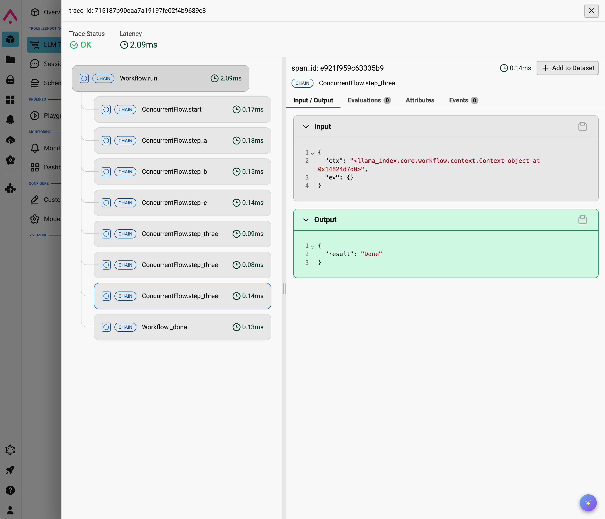

Observability#
Debugging is essential to any application development, and Workflows provide you a number of ways to do that.
Visualization#
The simplest form of debugging is visualization, which we've already used extensively in this tutorial. You can visualize your workflow at any time by running the following code:
from llama_index.utils.workflow import draw_all_possible_flows
draw_all_possible_flows(MyWorkflow, filename="some_filename.html")
This will output an interactive visualization of your flow to some_filename.html that you can view in any browser.

Verbose mode#
When running any workflow you can always pass verbose=True. This will output the name of each step as it's executed, and whether and which type of event it returns. Using the ConcurrentWorkflow from the previous stage of this tutorial:
class ConcurrentFlow(Workflow):
@step
async def start(
self, ctx: Context, ev: StartEvent
) -> StepAEvent | StepBEvent | StepCEvent:
ctx.send_event(StepAEvent(query="Query 1"))
ctx.send_event(StepBEvent(query="Query 2"))
ctx.send_event(StepCEvent(query="Query 3"))
@step
async def step_a(self, ctx: Context, ev: StepAEvent) -> StepACompleteEvent:
print("Doing something A-ish")
return StepACompleteEvent(result=ev.query)
@step
async def step_b(self, ctx: Context, ev: StepBEvent) -> StepBCompleteEvent:
print("Doing something B-ish")
return StepBCompleteEvent(result=ev.query)
@step
async def step_c(self, ctx: Context, ev: StepCEvent) -> StepCCompleteEvent:
print("Doing something C-ish")
return StepCCompleteEvent(result=ev.query)
@step
async def step_three(
self,
ctx: Context,
ev: StepACompleteEvent | StepBCompleteEvent | StepCCompleteEvent,
) -> StopEvent:
print("Received event ", ev.result)
# wait until we receive 3 events
if (
ctx.collect_events(
ev,
[StepCCompleteEvent, StepACompleteEvent, StepBCompleteEvent],
)
is None
):
return None
# do something with all 3 results together
return StopEvent(result="Done")
You can run the workflow with verbose mode like this:
w = ConcurrentFlow(timeout=10, verbose=True)
result = await w.run()
And you'll see output like this:
Running step start
Step start produced no event
Running step step_a
Doing something A-ish
Step step_a produced event StepACompleteEvent
Running step step_b
Doing something B-ish
Step step_b produced event StepBCompleteEvent
Running step step_c
Doing something C-ish
Step step_c produced event StepCCompleteEvent
Running step step_three
Received event Query 1
Step step_three produced no event
Running step step_three
Received event Query 2
Step step_three produced no event
Running step step_three
Received event Query 3
Step step_three produced event StopEvent
Stepwise execution#
In a notebook environment it can be helpful to run a workflow step by step. You can do this by calling run_step on the handler object:
w = ConcurrentFlow(timeout=10, verbose=True)
handler = w.run(stepwise=True)
# Each time we call `run_step`, the workflow will advance and return all the events
# that were produced in the last step. This events need to be manually propagated
# for the workflow to keep going (we assign them to `produced_events` with the := operator).
while produced_events := await handler.run_step():
# If we're here, it means there's at least an event we need to propagate,
# let's do it with `send_event`
for ev in produced_events:
handler.ctx.send_event(ev)
# If we're here, it means the workflow execution completed, and
# we can now access the final result.
result = await handler
You can call run_step multiple times to step through the workflow one step at a time.
Visualizing most recent execution#
If you're running a workflow step by step, or you have just executed a workflow with branching, you can get the visualizer to draw only exactly which steps just executed using draw_most_recent_execution:
from llama_index.utils.workflow import draw_most_recent_execution
draw_most_recent_execution(w, filename="last_execution.html")
Note that instead of passing the class name you are passing the instance of the workflow, w.
Checkpointing#
Full workflow executions may end up taking a lot of time, and its often the case that only a few steps at a time need to be debugged and observed. To help with speed up Workflow development cycles, the WorkflowCheckpointer object wraps a Workflow and creates and stores Checkpoint's upon every step completion of a run. These checkpoints can be viewed, inspected and chosen as the starting point for future run's.
from llama_index.core.workflow.checkpointer import WorkflowCheckpointer
w = ConcurrentFlow()
w_ckptr = WorkflowCheckpointer(workflow=w)
# run the workflow via w_ckptr to get checkpoints
handler = w_cptr.run()
await handler
# view checkpoints of the last run
w_ckptr.checkpoints[handler.run_id]
# run from a previous ckpt
ckpt = w_ckptr.checkpoints[handler.run_id][0]
handler = w_ckptr.run_from(checkpoint=ckpt)
await handler
Third party tools#
You can also use any of the third-party tools for visualizing and debugging that we support, such as Arize.

One more thing#
Our last step in this tutorial is an alternative syntax for defining workflows using unbound functions instead of classes.